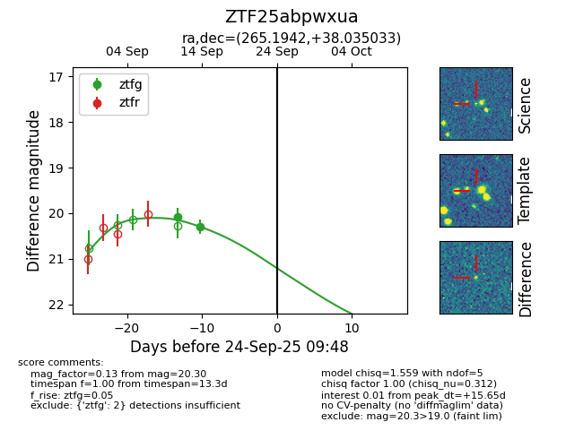
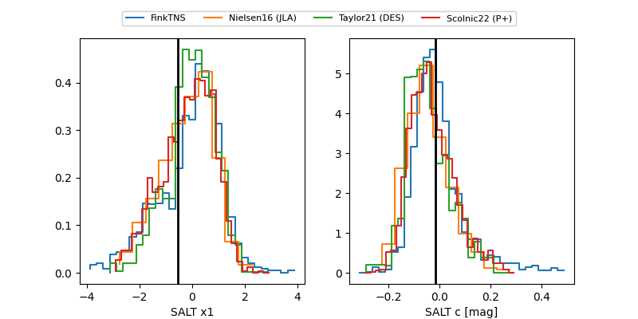

FINK: ZTF25abpwxua
Lasair: ZTF25abpwxua
ALeRCE: ZTF25abpwxua
ZTF25abpwxua (ztf,fink)
equatorial (ra, dec) = (265.1942,+38.03503)
galactic (l, b) = (63.2786,+29.58203)


last ztfg=20.30
2 ztfg detections